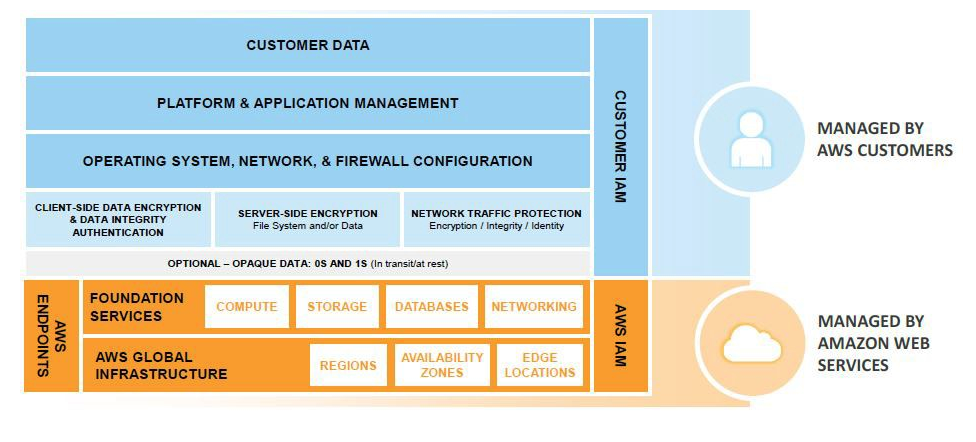

이 포스트는 AWS 자격증 스터디에서 AWS Security Best Practies 백서(2016/08)를 한글로 번역 및 요약한 자료입니다. 해당 포스트는 계속해서 업데이트 됩니다.
마지막 업데이트 : 2018/07/12
AWS를 사용하면 ISO 27001표준 ISMS(Information Security Managment System)를 쉽게 구축할 수 있다
AWS Shared Responsibility Model
- AWS는 클라우드 보안 인프라와 서비스를 제공하고, 고객은 OS, 플랫폼, 데이터의 보안에 대한 책임이 있다.
- AWS는 세 가지 타입의 공유 권한 모델을 제공해준다
- Infrastructure services
- Container services
- Abstracted services
Understanding the AWS Secure Global InfraStructure
Identity and Access Manamgement (IAM) 서비스
- 유저와 보안자격(Password, Access keys, Permission policies)등을 중앙 집중적으로 관리해주는 서비스
- 하나의 AWS account 내 각각의 이름과 비밀번호, 엑세스 키를 가진 유저를 여러명 만들수 있다
- 각각의 유저는 계정 URL을 통해 계정 콘솔로 로그인 할 수 있다
- 각각의 유저에게 AWS 계정내 리소스에 프로그래밍적으로 접근할 수있도록 Access key를 만들어 줄 수 있다
- 각 유저의 활동에 대한 비용은 AWS 계정으로 청구된다.
- 관리자도 계정 자격보다는 유저를 만들어서 접근하는 것을 추천한다
Regions, Availability Zones, and Endpoints
- Region
- 물리적 데이터 저장소 위치
- Network latency 및 Regulatory compliance(규정준수, 나라 or 지역별 법 준수를 말하는 듯)를 고려해서 Region을 선택할 수 있음
- 특정 Region을 정했다면 해당 지역 외부로는 데이터 복제가 일어나지 않음. 사용자의 책임임
- Availability Zone
- Region내에서 Fault isolation을 위해 디자인된 논리적 지역구분
- 다수의 ISP(인터넷공급업자)와 다른 전원공급망을 사용
- 같은 리전내에 다른 가용공간 끼리의 통신은 LAN으로 연결되어있기 때문에 매우 빠름
- 장애에 대처하기 위해 시스템을 다수의 가용영역에 위치 시키는 것을 추천한다
- Service Endpoint
- Backplane 접근을 제공하는 서비스 앤드포인트
- AWS Mangment Consonle을 이용한 Web 접근
- API나 CLI를 통한 Programming 접근
Sharing Security Responsibility for AWS Services

- AWS는 3가지 카테고리로 구분하여 서비스를 제공한다
- 각 서비스는 사용자의 접근 및 사용 방법에 따라 약간씩 다른 보안 오너십 모델이 제공된다
- Infrastruture services
- 컴퓨터 서비스, 아마존 EC2, 아마존 EBS(Elastic Block Store), Auto Scaling, Amazon VPC(Virtual Private Cloud)
- Container Services
- 일반적으로 EC2나 인프라 인스턴스 위에서 동작하는 서비스들을 일컬음
- 몇몇 플랫폼 이나 OS 레벨의 서비스는 Container 관리서비스를 이용(방화벽, 플랫폼 레벨의 자격증명 등)
- 아마존 RDS(Relational Database Services), 아마존 EMR(Elastic Map Reduce), AWS Elastic Beanstalk
- Abstracted Services
- 플랫폼이나 관리 레이어를 추상화한 서비스(플랫봄 상위수준, 플랫폼 독립적이라는 뜻인듯)
- High-level 저장소, DB, messageing 서비스
- 사용자는 클라우드 어플리케션을 빌드 및 실행 가능 하며 AWS API를 통해서 액세스 가능
- AWS는 서비스 구성요소 및 서비스가 상주하는 OS를 관리
- 사용자는 기본 인프라를 공유하고, 서비스는 멀티 테넨트 플랫폼을 제공
- 아마존 S3(Simple Storage Service), 아마존 Glacier, 아마존 DynamoDB, 아마존 SQS(Simple Queuing Service), 아마존 SES(Simple Email Service)
Shared Responsibility Model for Infrastrucutr Services
- 인프라서비스는 항상 실행된 특정 리전에서 작동한다
- 하지만 다수의 가용영역의 구성요소를 잘 활용하면 각각 서비스의 가용성을 초과하는 높은 가용성 수준을 충족시킬 수 있다
- 보다 엄격한 비즈니스 또는 규정 준수사항이 없다면 AWS 보안 글로벌 인프라외에 보안 레이어를 추가할 필요는 없다
- 특정 규정준수 요구사항이 있다면, AWS가 제공해주는 기술을 사용해 사용자 OS, 플랫폼과 AWS 사이에 추가적인 장치(데이터 암호화, 데이터 무결성 인증, 소프트웨어 및 데이터 서명 등등) 넣을 수도 있다
- 사용자가 표준 AMI를 통해 EC2인스턴스를 실행시켰을 경우, SSH나 RDP를 통해 인스턴스에 접근하려면 OS레벨의 인증을 받아야한다
- EC2 인스턴스에 접근하기 위해 아마존 EC2 Key pair(업계표준인 RSA Key pair의 일종)를 사용할 수있다
- EC2 Key pair는 AWS 계정이나 IAM 유저 자격과 상관없다
- AWS계정이나 IAM 유저 자격은 다른 AWS서비스들에 대한 접근을 관리
- EC2 Key pair는 오직 특정 인스턴스에 대한 접근을 관리
- OpenSSL을 통해서 EC2 key pair를 만들 경우
- Public key를 AWS에 등록, Private key를 저장해서 사용
- AWS를 통해 EC2 key pair를 만들 경우
- Public key와 Private Key가 처음 인스턴스 생성때 만들어서 보여짐
- Private key는 다운로드 및 저장해서 사용(AWS는 Private key를 저장하지 않음)
- Private key 분실 시 새 pair를 만들어야함
- cloud-init 서비스를 이용해 아마존 EC2 Linux 인스턴스를 만든 경우
- Public key 위치 : ~/.ssh/authorized_keys
- 사용자는 SSH client를 통해 연결 할 수 있음
- ec2config 서비스를 이용해 아마존 EC2 Window 인스턴스를 만든 경우
- 관리자 비밀번호를 랜덤으로 생성, Public key를 이용해 암호화
- 사용자는 AWS 콘솔이나 CLI를 이용해 관리자 (암호화된) 비밀번호를 획득할 수 있음
- 사용자가 Private key로 접근하면 Private key로 비밀번호를 복호화해 인증 진행
- 더 높은 수준의 보안이 요구된다면, LDAP 혹은 Active Directory authentication을 구현하고, 아마존 EC2 key pair 인증은 비활성화 시킬 수 있다
Shared Responsibility Model for Container Services
- 아마존 RDS나 EMR같은 Container services에서 AWS는 기본인프라와 기반서비스, OS와 플랫폼을 관리한다(그 외는 사용자 책임이라는 뜻으로 보임, c.f. 인프라서비스에서 OS와 플랫폼은 사용자 책임)
- 예를 들어 아마존 RDS for Oracle은 오라클 DB 플랫폼 서비스도 포함한 Container의 모든 layer를 관리한다(데이터 백업과 복구 도구 등을 제공해줌). 그러나 Business continuity 와 Disaster recovery (BC/ DR) 정책은 사용자 몫이다
- AWS Container Services에서 해당서비스에 접근하기 위한 데이터와 방화벽 규칙은 사용자의 몫이다. 서비스 인스턴스에 대한 Security groups은 AWS가 제공